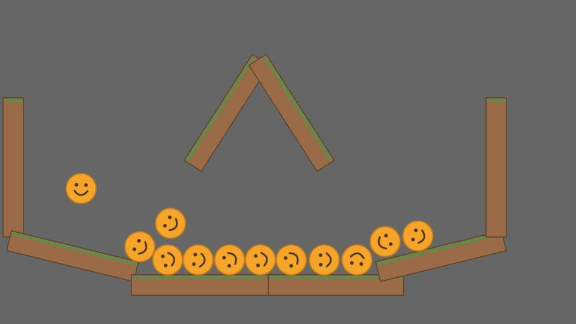
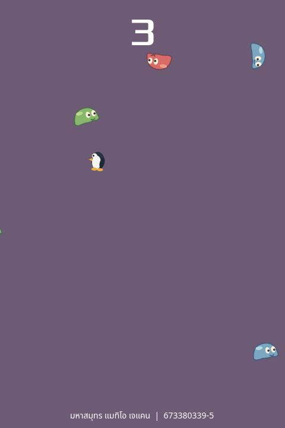

แบบฝึกหัดที่ 2: Your First 2D Game
ชื่อ: มหาสมุทร แมทิโอ เจแคน
รหัสนักศึกษา: 673380339-5
ผลงานภารกิจ 1 และ 2 สร้างด้วย Godot
ภารกิจ 1 — Game21 ลูกบอลเด้ง
ลูกบอลตกลงมาตามแรงโน้มถ่วงและเด้งเมื่อชนแผ่นไม้ ใช้ฉาก Ball และ Wall ซ้ำในฉากหลักตามบทเรียนเรื่อง Scene, Node และ Instance

วิธีเล่น: คลิกตรงไหนก็สร้างลูกบอลตรงนั้น แล้วลูกบอลจะตกและเด้งชนแผ่นไม้ กด R เพื่อเริ่มฉากใหม่
ภารกิจ 2 — Game22 Dodge the Creeps!
เกมหลบศัตรูตามบทเรียน Your First 2D Game เปลี่ยนภาพตัวละครและเสียงประกอบ เคลื่อนที่เพื่อหลบศัตรูให้นานที่สุด เมื่อชนศัตรูเกมจะจบและเริ่มเล่นใหม่ได้

วิธีเล่น: กด Start หรือ Enter แล้วใช้ปุ่มลูกศรหรือ WASD เคลื่อนที่หลบศัตรู คะแนนเพิ่มตามเวลาที่อยู่รอด